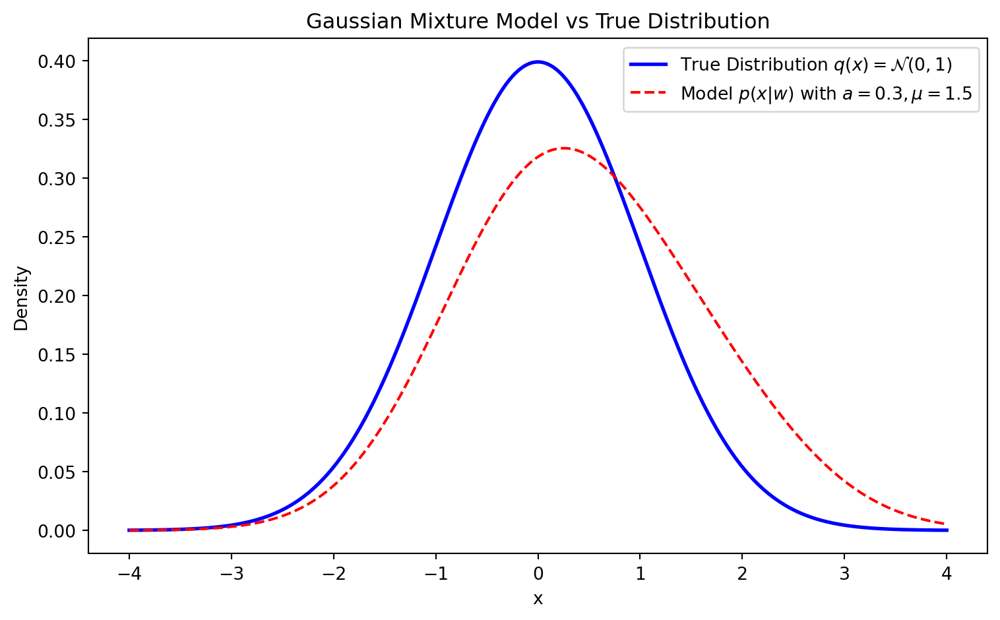
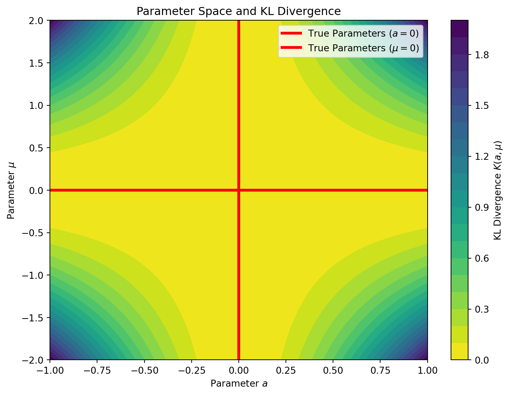
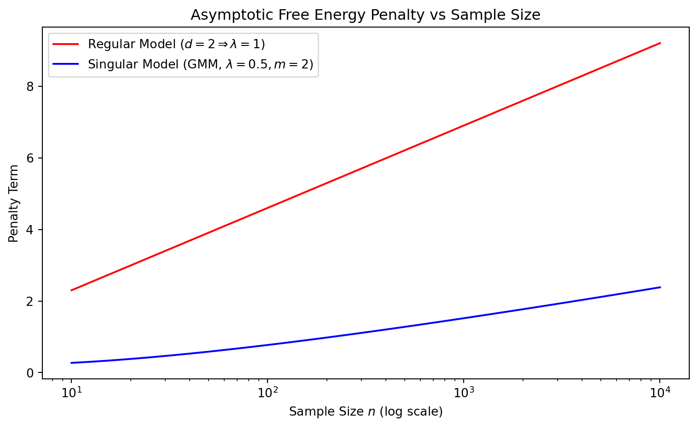
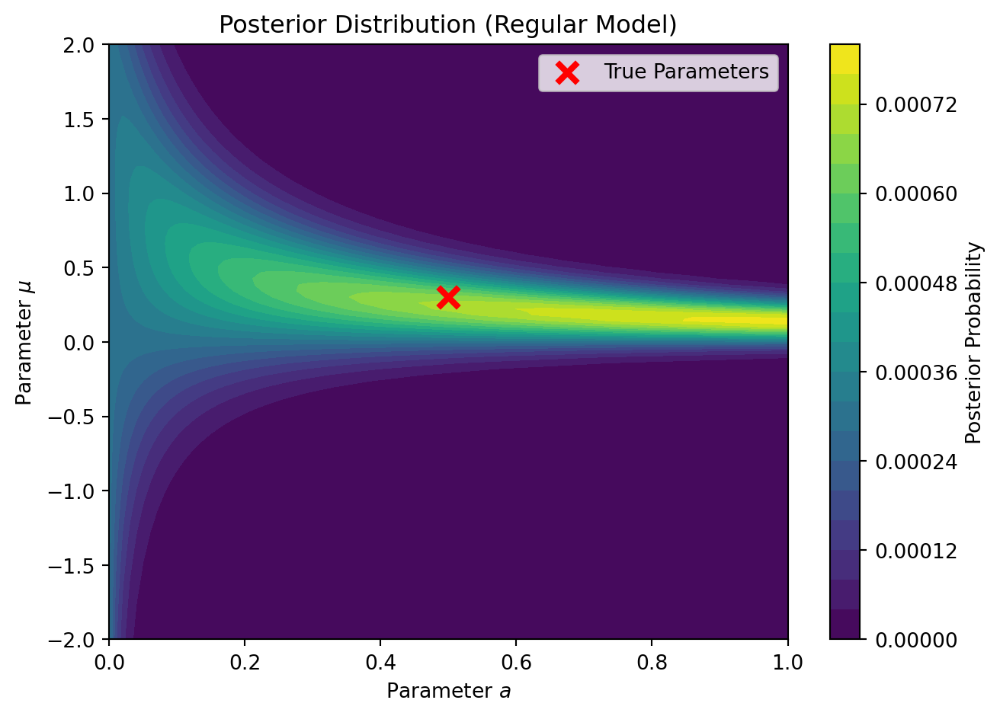

Illustrating Watanabe’s Singular Learning Theory with a Gaussian Mixture Model
This document provides a walk-through of Sumio Watanabe’s Singular Learning Theory (up to Chapter 6), using a two-component Gaussian Mixture Model (GMM) as a concrete pedagogical example.
1. Introduction: The Model and the True Distribution (Chapter 1)
In statistical formulation, we consider a learning machine defined by a parametric statistical model \(p(x|w)\) and a true data-generating distribution \(q(x)\).
The Two-Component Gaussian Mixture
Let’s define a simple 2-parameter Gaussian Mixture Model where one component is fixed at the origin: \[ p(x|w) = (1-a) \mathcal{N}(x|0, 1) + a \mathcal{N}(x|\mu, 1) \] Here, the parameter vector is \(w = (a, \mu) \in W = [0, 1] \times [-c, c]\).
Suppose the true distribution is simply a standard normal distribution: \[ q(x) = \mathcal{N}(x|0, 1) \]
Code
import numpy as npimport matplotlib.pyplot as pltx = np.linspace(-4, 4, 400)q = np.exp(-x**2/2)/np.sqrt(2*np.pi)p =0.7* np.exp(-x**2/2)/np.sqrt(2*np.pi) +0.3* np.exp(-(x-1.5)**2/2)/np.sqrt(2*np.pi)plt.figure(figsize=(8, 5))plt.plot(x, q, label=r'True Distribution $q(x) = \mathcal{N}(0,1)$', color='blue', linewidth=2)plt.plot(x, p, label=r'Model $p(x|w)$ with $a=0.3, \mu=1.5$', color='red', linestyle='--')plt.title("Gaussian Mixture Model vs True Distribution")plt.xlabel("x")plt.ylabel("Density")plt.legend()plt.tight_layout()plt.show()

Figure 1: True Distribution vs Model
The Set of True Parameters
The true distribution is realized by the model whenever \(p(x|w) = q(x)\). By inspecting the equation: \[ (1-a) \mathcal{N}(x|0, 1) + a \mathcal{N}(x|\mu, 1) = \mathcal{N}(x|0, 1) \]\[ a (\mathcal{N}(x|\mu, 1) - \mathcal{N}(x|0, 1)) = 0 \]
This holds true if and only if \(a = 0\) (the mixing proportion is zero) OR \(\mu = 0\) (both components are identical). Thus, the set of true parameters \(W_0\) is: \[ W_0 = \{ (a, \mu) \in W : a = 0 \text{ or } \mu = 0 \} \]
This means that \(W_0\) is not a single point, but the union of two intersecting lines. In classical (regular) statistical theory, \(W_0\) is assumed to be a single point, and the Fisher Information Matrix is positive definite. Here, the Fisher Information Matrix degenerates on \(W_0\), making this a singular model.
The Kullback-Leibler Divergence
The log-likelihood ratio (empirical loss) is driven by the Kullback-Leibler (KL) divergence from \(q(x)\) to \(p(x|w)\): \[ K(w) = \int q(x) \log \frac{q(x)}{p(x|w)} dx \]
Using a Taylor expansion for small \(a\) and \(\mu\), we can approximate \(p(x|w)\): \[ p(x|w) = \mathcal{N}(x|0, 1) \left[ 1 + a (e^{\mu x - \mu^2/2} - 1) \right] \approx \mathcal{N}(x|0, 1) \left[ 1 + a\left(\mu x + \frac{1}{2}\mu^2(x^2 - 1)\right) \right] \]
Plugging this into the KL divergence and using \(-\log(1+z) \approx -z + z^2/2\), the linear terms integrate to 0 under \(q(x)\), leaving the leading non-zero term: \[ K(w) \approx \frac{1}{2} a^2 \mu^2 \]
Code
A = np.linspace(-1, 1, 400)M = np.linspace(-2, 2, 400)AA, MM = np.meshgrid(A, M)K =0.5* (AA**2) * (MM**2)plt.figure(figsize=(8, 6))contour = plt.contourf(AA, MM, K, levels=20, cmap='viridis_r')plt.colorbar(contour, label=r'KL Divergence $K(a, \mu)$')plt.axhline(0, color='red', linewidth=3, label='True Parameters ($a=0$)')plt.axvline(0, color='red', linewidth=3, label=r'True Parameters ($\mu=0$)')plt.title("Parameter Space and KL Divergence")plt.xlabel("Parameter $a$")plt.ylabel(r"Parameter $\mu$")plt.legend()plt.tight_layout()plt.show()

Figure 2: Parameter Space and KL Divergence. Notice how the valley of \(K(w)=0\) forms a cross at \(a=0\) and \(\mu=0\).
2. Resolution of Singularities (Chapter 2)
Because the set of true parameters \(W_0\) has a singularity (an intersection forming a cross), standard asymptotic expansions (like the Laplace approximation) fail. Watanabe employs Hironaka’s Theorem on the Resolution of Singularities from algebraic geometry to resolve this.
The theorem states that there exists a real analytic manifold \(\mathcal{M}\) and a proper analytic map \(g: \mathcal{M} \to W\) (a “blow-up”) such that the composition \(K(g(u))\) has a simple normal crossing form.
The Blow-Up Transformation
For the approximation \(K(w) \approx \frac{1}{2} a^2 \mu^2\), the true parameters \(W_0\) correspond to the crossing lines \(a=0\) and \(\mu=0\). To resolve this intersection, we apply a “blow-up” transformation. A blow-up geometrically replaces the problematic intersection point (the origin) with an entire line (called the exceptional divisor), separating the paths that cross there.
We can reparameterize the space by keeping track of the slope of lines passing through the origin. We define a local coordinate chart (a directional blow-up) as: \[ a = u_1 \]\[ \mu = u_1 u_2 \]
Here, \(u_1\) simply represents the original \(a\) coordinate, while \(u_2 = \mu / a\) represents the slope of a line passing through the origin in the \((a, \mu)\) parameter space.
A single point in the original space—the origin \((a=0, \mu=0)\)—now corresponds to the entire line \(u_1 = 0\) for any value of \(u_2\) in the new space.
The crossing lines in the \((a, \mu)\) space have been pulled apart. Actually, our new coordinate system does not extend to the line \(a=0\), but we can get arbitrarily close to it. We would need another patch with coordinates \(\mu, a/\mu\) to represent the line \(a=0\).
The KL divergence in these new coordinates \(u = (u_1, u_2)\) is \[ K(g(u)) \approx \frac{1}{2} (u_1)^2 (u_1 u_2)^2 = \frac{1}{2} u_1^4 u_2^2 \]
We must also account for the distortion of the volume measure, dictated by the Jacobian of \(g\): \[ dw = |g'(u)| du = \left| \det \begin{pmatrix} 1 & 0 \\ u_2 & u_1 \end{pmatrix} \right| du_1 du_2 = |u_1| du_1 du_2 \]
3. Standard Form and Real Log Canonical Threshold (Chapter 3)
In Chapter 3, Watanabe introduces the concept of the Real Log Canonical Threshold (RLCT), denoted by \(\lambda\), and its multiplicity \(m\). These two algebraic invariants completely govern the asymptotic behavior of the learning machine.
To understand why the blow-up was a strictly necessary algebraic maneuver, we have to look at how \(\lambda\) is formally calculated. By definition, the RLCT is found by examining the analytic continuation of the zeta function of the statistical model, given by the integral: \[ \zeta(z) = \int (K(w))^z \varphi(w) dw \] where \(\varphi(w)\) is the prior distribution and \(z \in \mathbb{C}\) (\(\Re(z) > 0\)). The RLCT \(\lambda\) is defined such that \(-\lambda\) is the largest (closest to zero) real pole of this function, and its multiplicity \(m\) is the order of this pole.
Without the blow-up, evaluating this integral and finding its poles is mathematically intractable. The true KL divergence \(K(w)\) isn’t just a simple polynomial like \(a^2\mu^2\); it contains an infinite series of higher-order terms from the Taylor expansion. Because the variables are coupled in a highly non-linear way at the singularity (the cross \(a=0, \mu=0\)), you cannot separate the variables to evaluate the integral.
This is where the blow-up of the singularity resolves the integration problem. Hironaka’s Theorem guarantees that after passing to the resolved coordinates \(u\), the fully complex divergence \(K(g(u))\) perfectly factors into a single monomial multiplied by a non-vanishing positive analytic function \(b(u) > 0\). The prior measure and Jacobian of the blow-up also become a simple monomial multiplied by a strictly positive function \(c(u) > 0\).
When we substitute this Standard Form into the zeta function integral using our resolved coordinates \(u\), the variables completely decouple near the origin: \[ \zeta(z) = \int \left( u_1^{2k_{1}} u_2^{2k_{2}} b(u) \right)^z \left( u_1^{h_1} u_2^{h_2} c(u) \right) du_1 du_2 \]\[ \zeta(z) \approx C \left( \int u_1^{2k_1 z + h_1} du_1 \right) \left( \int u_2^{2k_2 z + h_2} du_2 \right) \]
Evaluating these independent 1D integrals yields formulas of the type: \[ \int_0^\epsilon u^{2k z + h} du = \frac{\epsilon^{2k z + h + 1}}{2k z + h + 1} \] This expression clearly has a pole exactly when the denominator is zero, i.e., at \(z = -\frac{h + 1}{2k}\).
By separating the variables, the blow-up perfectly isolates the poles of the zeta function!
Using our specific factors from the GMM blow-up: 1. Divergence function: \(K(u) = u_1^4 u_2^2\) (so \(k_1 = 2\), \(k_2 = 1\)) 2. Prior measure / Jacobian: \(\Phi(u) = u_1^1 u_2^0\) (so \(h_1 = 1\), \(h_2 = 0\))
The candidate poles \(z = -\lambda_j\) along each coordinate axis \(j\) give us: \[ \lambda_j = \frac{h_j + 1}{2k_j} \]
The overall RLCT \(\lambda\) is dictated by the pole closest to zero, which is the minimum of these values: \[ \lambda = \min(\lambda_1, \lambda_2) = \min(1/2, 1/2) = \frac{1}{2} \]
The multiplicity\(m\) is the order of this leading pole, which equals the number of coordinate indices \(j\) that achieve this minimum. Here, both \(\lambda_1\) and \(\lambda_2\) equal \(1/2\). Thus: \[ m = 2 \]
Note: In a regular model with parameter dimension \(d=2\), the RLCT is always \(\lambda = d/2 = 1\). Our singular GMM has \(\lambda = 1/2 < 1\), showcasing the mathematical definition of a singular learning machine.
4. Singular Fluctuation and Free Energy (Chapter 4)
In Bayesian evaluation, the Stochastic Complexity or Free Energy\(F_n\) represents the negative log-marginal likelihood (evidence) of the data \(X^n\): \[ F_n = -\log Z_n = -\log \int e^{-n L_n(w)} \varphi(w) dw \] where \(L_n(w) = -\frac{1}{n} \sum \log p(X_i|w)\) is the empirical loss.
Chapter 4 defines how the parameter posterior behaves under singular fluctuations. Using the algebraic invariants we just found, SLT proves that the free energy asymptotically expands as:
\[ F_n \approx n L_n(w_0) + \lambda \log n - (m-1) \log \log n + O_p(1) \]
For our two-component Gaussian Mixture Model: \[ F_n \approx n L_n(w_0) + \frac{1}{2} \log n - \log \log n + O_p(1) \]
Code
n = np.logspace(1, 4, 100)F_reg =1.0* np.log(n)F_sing =0.5* np.log(n) -1.0* np.log(np.log(n +1.1))plt.figure(figsize=(8, 5))plt.plot(n, F_reg, label=r'Regular Model ($d=2 \Rightarrow \lambda=1$)', color='red')plt.plot(n, F_sing, label=r'Singular Model (GMM, $\lambda=0.5, m=2$)', color='blue')plt.title("Asymptotic Free Energy Penalty vs Sample Size")plt.xlabel("Sample Size $n$ (log scale)")plt.ylabel("Penalty Term")plt.xscale('log')plt.legend()plt.tight_layout()plt.show()

Figure 3: Asymptotic Free Energy. The penalty term for the singular model is significantly smaller than for a regular model, making singular models heavily preferred by the marginal likelihood.
This result breaks the classical Bayesian Information Criterion (BIC), which assumes a penalty of \(\frac{d}{2} \log n\). BIC would have penalized this 2-parameter model by \(1.0 \log n\), entirely missing the true Bayesian Occam’s Razor effect on the singular manifold.
5. Generalization and Training Errors (Chapter 5)
Chapter 5 links the geometry of the parameter space to the average errors. Let \(G_n\) be the Generalization Error (expected loss on new data) and \(T_n\) be the Training Error (empirical loss on the training set).
In traditional regular statistics (like AIC), the expectation of these errors relies on \(d\): \[ \mathbb{E}[G_n] = L(w_0) + \frac{d}{2n} \]\[ \mathbb{E}[T_n] = L(w_0) - \frac{d}{2n} \]
In Singular Learning Theory, Watanabe elegantly proves a symmetry relation using \(\lambda\): \[ \mathbb{E}[G_n] = L(w_0) + \frac{\lambda}{n} \]\[ \mathbb{E}[T_n] = L(w_0) - \frac{\lambda}{n} \]
For our continuous GMM, \(\lambda = 1/2\). Therefore: - Expected Generalization Error converges with rate \(\frac{0.5}{n}\). - Expected Training Error converges with rate \(-\frac{0.5}{n}\).
This explains why heavily overparameterized singular models (like deep neural networks and complex mixtures) often generalize better than their parameter count \(d\) would imply; their learning dynamics are constrained by the smaller geometric invariant \(\lambda < d/2\).
6. Asymptotic Expansion and WAIC (Chapter 6)
Finally, Chapter 6 resolves a crucial practical problem. Since calculating \(\lambda\) analytically requires algebraic blow-ups (which is impossible for massive modern models like LLMs), we cannot use it directly to estimate the generalization error. Furthermore, cross-validation can be unstable in singular models.
Watanabe introduces the Widely Applicable Information Criterion (WAIC): \[ \text{WAIC} = T_n + \frac{1}{n} \sum_{i=1}^n V_w \left( \log p(X_i | w) \right) \] Where \(V_w\) is the posterior variance of the log-likelihood for data point \(X_i\).
The core theorem of Chapter 6 proves that WAIC is an asymptotically unbiased estimator of the generalization error, even for singular models: \[ \mathbb{E}[\text{WAIC}] \approx \mathbb{E}[G_n] \]
In the context of our GMM, evaluating the posterior variance computationally via Markov Chain Monte Carlo (MCMC) allows us to estimate the true hold-out performance without needing to analytically find \(\lambda = 1/2\) or \(m=2\), proving WAIC’s universal applicability in modern deep learning and mixture modeling.
Calculating WAIC in Practice
To make this concrete, let’s generate a synthetic dataset from the true distribution \(q(x) = \mathcal{N}(0, 1)\) and compute the WAIC for our toy GMM. By using a fine grid covering our parameter space \(W = [0, 1] \times [-2, 2]\), we can exactly compute the posterior and WAIC without relying on intricate MCMC setups.
Code
import numpy as np# 1. Generate synthetic data from true distribution q(x) = N(0,1)np.random.seed(42)n =100X = np.random.normal(0, 1, n)# 2. Define parameter grid for evaluating the posteriora_vals = np.linspace(0, 1, 100)mu_vals = np.linspace(-2, 2, 100)A, MU = np.meshgrid(a_vals, mu_vals)# p(x|a, mu) = (1-a)*N(x|0,1) + a*N(x|mu,1)def norm_pdf(x, m, s):return np.exp(-0.5* ((x - m) / s)**2) / (np.sqrt(2* np.pi) * s)# 3. Compute log-likelihood for each parameter pair and each data pointlog_p = np.zeros((n, len(mu_vals), len(a_vals)))for i, x inenumerate(X): p_x_w = (1- A) * norm_pdf(x, 0, 1) + A * norm_pdf(x, MU, 1)# Add a small epsilon to prevent log(0) log_p[i] = np.log(p_x_w +1e-12)# 4. Compute unnormalized posterior probabilities (assuming uniform prior)# Sum over all data points to get the full log-likelihood for each parameter pairtotal_log_likelihood = np.sum(log_p, axis=0) # Subtract maximum for numerical stability before exponentiatinglog_posterior = total_log_likelihood - np.max(total_log_likelihood)posterior = np.exp(log_posterior)# Normalize to create a valid probability distribution over the gridposterior /= np.sum(posterior) # 5. Calculate WAICpredictive_density = np.zeros(n)V_w = np.zeros(n)for i inrange(n):# Expected volume: E_w[p(X_i|w)] predictive_density[i] = np.sum(np.exp(log_p[i]) * posterior)# Posterior variance of the log-likelihood: V_w(log p(X_i|w)) expected_log_p = np.sum(log_p[i] * posterior) expected_log_p_sq = np.sum((log_p[i]**2) * posterior) V_w[i] = expected_log_p_sq - expected_log_p**2# T_n: Empirical training loss of the Bayes predictive distributionT_n =-1.0/ n * np.sum(np.log(predictive_density +1e-12))# Functional variance penalty term# This corresponds to (1/n) * sum(V_w)penalty = np.mean(V_w)waic = T_n + penalty# 6. Calculate True Generalization Error on massive holdoutn_test =20000X_test = np.random.normal(0, 1, n_test)pred_dens_test = np.zeros(n_test)batch_size =2000for b inrange(0, n_test, batch_size): end_idx =min(b + batch_size, n_test) X_batch = X_test[b:end_idx] X_expanded = X_batch[:, np.newaxis, np.newaxis] p_batch = (1- A) * norm_pdf(X_expanded, 0, 1) + A * norm_pdf(X_expanded, MU, 1) expected_p = np.sum(p_batch * posterior, axis=(1, 2)) pred_dens_test[b:end_idx] = expected_pgen_error =-1.0/ n_test * np.sum(np.log(pred_dens_test +1e-12))print(f"Sample size n = {n}")print(f"Training Error (T_n) = {T_n:.4f}")print(f"Penalty Term (V / n) = {penalty:.4f}")print(f"WAIC = {waic:.4f}")print(f"Generalization Error = {gen_error:.4f}")
Sample size n = 100
Training Error (T_n) = 1.3310
Penalty Term (V / n) = 0.0057
WAIC = 1.3367
Generalization Error = 1.4243
Visualizing the Posterior
We can also visualize the posterior distribution over our parameter grid to see how it concentrates around the true parameters. Because this is a singular model, the asymptotic distribution does not look like a neat Gaussian blob—instead, it concentrates along the non-identifiable manifold (the cross at \(a=0\) or \(\mu=0\)).
Figure 4: Posterior Distribution of GMM Parameters. Notice how the probability mass is drawn out along the axes representing the true parameters.
Contrast: Asymptotic Regularity vs. Finite-Sample Singularity
What happens if the true distribution \(q(x)\) is actually drawn from a genuine two-component mixture with both \(a \neq 0\) and \(\mu \neq 0\)? For example, setting \(a=0.5\) and \(\mu=0.3\).
In this case, the true parameters \((a_0, \mu_0)\) lie in the interior of the parameter space, and there is exactly one parameter combination that matches the distribution. The true parameter space shrinks to a single, unique point. Because the true parameters are uniquely identifiable, the log-likelihood function has a strict minimum at \((a_0, \mu_0)\), and the Hessian (Fisher Information Matrix) becomes positive definite. Asymptotically (\(n \to \infty\)), the model behaves as a standard regular model.
In this theoretical asymptotic scenario: 1. The Real Log Canonical Threshold becomes \(\lambda = d/2 = 2/2 = 1.0\). 2. The multiplicity is \(m = 1\). 3. The Bayesian Occam’s Razor penalty term in WAIC should converge to roughly \(1.0\times (\log n)/n\) for free energy, or \(1.0/n\) for generalization error. We expect the functional variance \(V\) to approximate this \(1.0\) factor (rather than \(0.5\)).
Let’s test this by running our WAIC code again, but generating the data from \(a=0.5\) and \(\mu=0.3\):
Sample size n = 100
Training Error (T_n) = 1.3483
Regular Penalty Term (V / n) = 0.0073
WAIC = 1.3556
Generalization Error = 1.4317

Posterior Distribution for the ‘Regular’ Case with Finite Sample Size. Because the true parameter \(\mu=0.3\) is very close to the singularity \(\mu=0\), the sample size \(n=100\) is not large enough to resolve the parameters perfectly. The posterior is gravitationally pulled into the singularity, maintaining the shape and WAIC penalty of a singular model.
The Gravitational Pull of the Singularity
Notice what happened in the plot and output! Despite the true model being theoretically regular, the penalty term \(V \approx 0.73\) is far closer to the singular penalty \(0.5\) than the regular penalty \(1.0\). And the posterior clearly does not look like a neat Gaussian blob; it is smeared out along the \(\mu=0\) axis exactly like the singular case.
Why? Because the true parameter \(\mu=0.3\) is extremely close to the singular manifold (\(\mu=0\)). Watanabe’s theory is asymptotic (\(n \to \infty\)). For a finite sample size of \(n=100\), the data simply does not have enough resolution to confidently distinguish the true distribution \(\mu=0.3\) from the singularity at \(\mu=0\). The likelihood spills over into the singularity, and the posterior is “gravitationally pulled” into the non-identifiable manifold, forcing the model to behave like a singular machine. It would take a much larger sample size (e.g., \(n=10,000\)) for the regular asymptotic theory to overcome the geometry of the singularity locally.
This is a profound realization from Singular Learning Theory: singularities govern the learning dynamics of models in practice, even when the true distribution is slightly off the singularity, because finite samples cannot perfectly resolve the identifiability.
The mathematical beauty of Chapter 6 is that WAIC works uniformly in both these cases without adjustment. The functional variance inherently adapts to the finite-sample geometry of the posterior, providing an accurate estimator of the true generalization error regardless of whether the model is trapped in a singularity or has broken free!
Is WAIC Still Good for Small Samples?
A natural follow-up question is whether WAIC remains a good estimator of generalization error when the sample size \(n\) is very small. The short answer is yes, and this is exactly where WAIC shines compared to classical criteria like the Deviance Information Criterion (DIC).
Classical criteria like DIC rely on a point estimate of the parameter (usually the posterior mean or mode). In a singular model, the posterior is highly non-Gaussian and often stretched along a non-identifiable manifold (like the cross at \(\mu=0\) or \(a=0\)). For a small sample, the posterior mean might land in a region of very low actual probability mass (e.g., in the empty space between two dense arms of the posterior). Because DIC evaluates the likelihood at this single mathematically awkward point, it can wildly misestimate the generalization error.
WAIC, on the other hand, averages the likelihood over the entire posterior distribution and calculates the functional variance point-by-point. It entirely avoids point estimation.